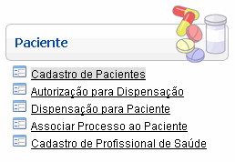
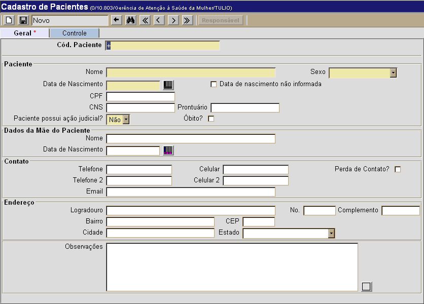
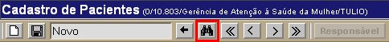

Cadastro de Pacientes [ Voltar ]Utilize este formulário para cadastrar no sistema os pacientes da rede. O formulário "Cadastro de Pacientes" encontra-se dentro do menu "Paciente". 
Ao clicar no nome do formulário, o sistema exibirá a seguinte tela: 
Selecione uma das duas opções abaixo para ver o passo-a-passo: Cadastrar pacienteEditar cadastro existente
Cadastrar paciente Dicas para
preenchimento dos campos de data:
Exemplo: se a data
atual é 20/10/2010,
digite "+10"
e pressione a tecla "Enter" para que o sistema retorne o dia 30/10/2010
Observação: o campo "Cód. Paciente" apresenta um sinal de mais "+" por padrão. Desta forma, assim que o cadastro é salvo, é-lhe atribuído o próximo número disponível. 2°
Passo: clique no botão
Editar cadastro existentePara editar os detalhes de um paciente
já cadastrado, siga os passos abaixo: 
Em seguida, utilize os filtros de pesquisa existentes para facilitar a localização do registro desejado. Para mais informações sobre outros recursos e funcionalidades da pesquisa, favor ver o manual Introdução ao Sistema.  Assim que localizar o paciente, selecione-o com um clique. A tela do "Cadastro de Pacientes" será exibida com os dados atuais para o paciente. |
 para concluir o cadastro
para concluir o cadastro da
barra de
botões.
da
barra de
botões.